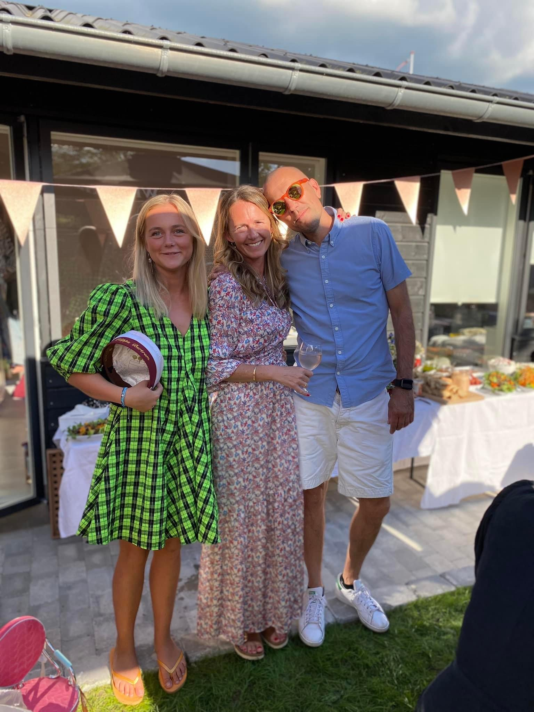
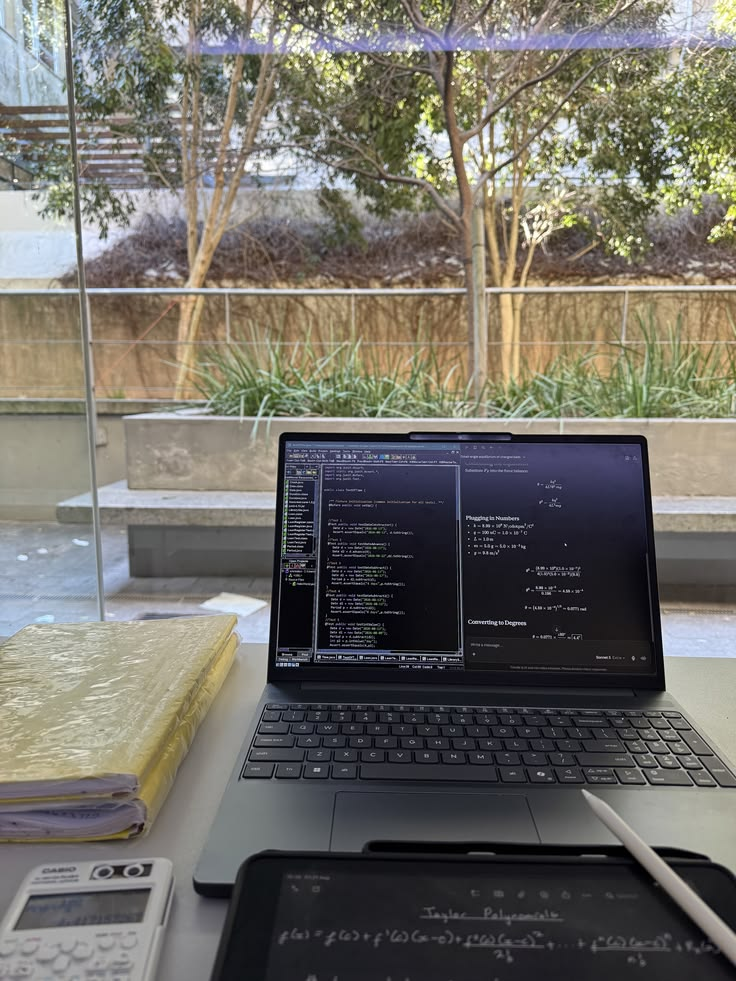

About me


Hi, my name is Filippa Bertram, and I’m 24 years old. I’m currently studying IT Architecture at EK. Before starting at EK, I took three gap years. During those years, I gained valuable experience and learned more about myself, my interests, and what I wanted to study. Through my work experience, I discovered that I have a strong interest in troubleshooting, problem-solving, and management. I’m a very logical person, and I enjoy finding solutions and understanding how things work. This is one of the main reasons why I enjoy studying IT Architecture at EK. On this website, you can get to know me better and follow my journey towards becoming an IT Architecture student, as well as learn more about my experiences, interests, and the skills I have developed along the way.
Education
IT Architecture - EK
It Architecture - At Ek. I chose this education because im very interested in coding, and what you can do with coding. I like troubleshooting i this in my previous job.

Work Experience
Greenbow
I worked at Greenbow for 2.5 years as the team leader of their technical support hotline. Greenbow is a startup company that sells Zaptec Go EV charging stations. I started the technical support hotline on my own because I was tired of only being able to tell customers to reset their charging station whenever something went wrong. I wanted to be able to actually understand and solve the problems. Because of this, I spent a lot of my free time researching how electric cars charge and where things can go wrong during a charging session. I also taught myself how the charging stations worked and learned how to use the different systems and tools we had access to through Zaptec. My research and knowledge allowed us to actually troubleshoot customers’ charging problems over the phone. We were able to troubleshoot both the car and the Zaptec charging station without needing to send a technician out immediately. As the technical support developed, I was given my own team of three employees who focused specifically on troubleshooting customers’ charging issues. I really enjoyed my time at Greenbow. The job played a big part in my decision to study IT Architecture. It showed me how much I enjoy problem-solving, understanding how systems work, and working with technology and coding.

ISEN Gilleleje & Tisvilde
This summer, my sister and I took over two of my parents' ice cream shops, one in Tisvilde and the other in Gilleleje. My family has owned several ice cream shops in the area over the years, so it has always been a familiar part of my life. I spent my entire summer working alongside my sister and being responsible for running the shops. A big part of the business is that we make our own cones by hand. In the picture I`m making cones at 5 am before the hottest day during the summer.

My Family
I grew up in Hornbæk, where I have lived for almost my entire life. I feel very lucky that my grandparents and the rest of my family also live there. Growing up so close to each other has given us a very strong bond, and family has always been a big part of my life. We have travelled a lot together, and travelling has always meant a lot to me. It has given us many great memories and experiences that I will always appreciate. Because my family means so much to me, I wanted to include them in my portfolio. They are a big part of who I am and have played an important role in shaping the person I am today.

Me and my sister

My sisters

My family